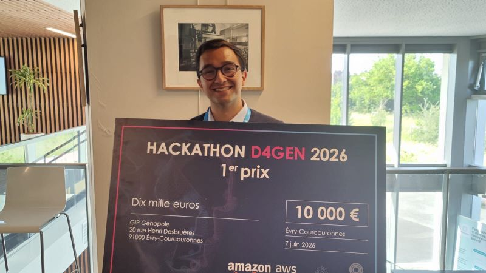
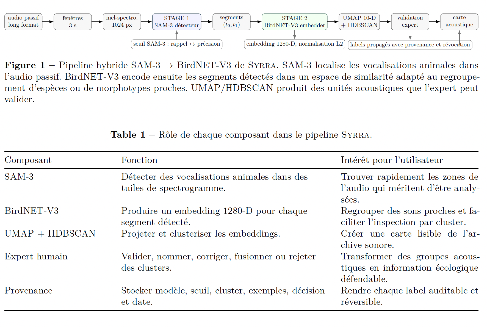
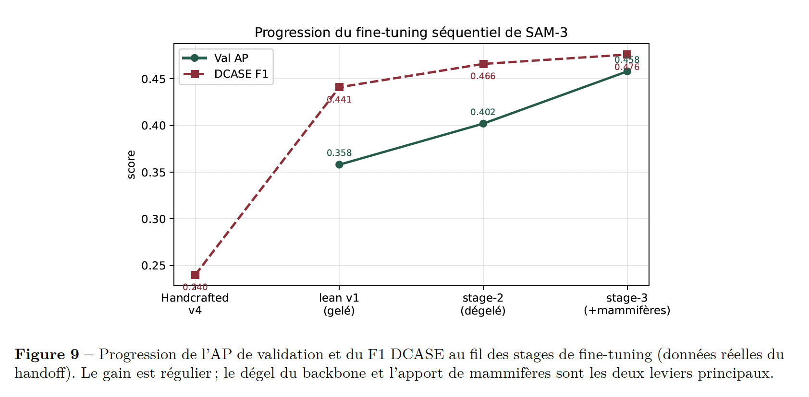
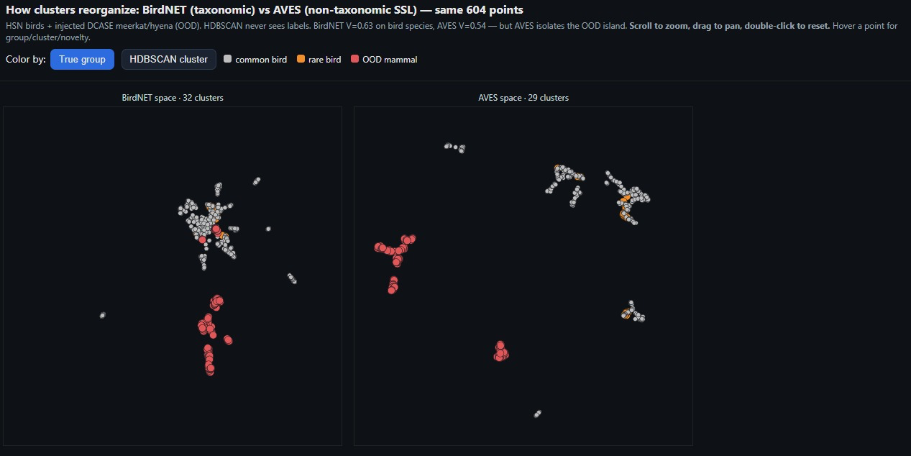

ContexteContext
Le monitoring acoustique passif permet de suivre la biodiversité sur de longues durées, mais génère trop d’audio pour une écoute exhaustive par des experts. L’enjeu est de transformer ces enregistrements en groupes sonores validables.
Passive acoustic monitoring enables biodiversity monitoring over long periods, but produces too much audio for exhaustive expert listening. The challenge is to turn these recordings into sound groups that experts can validate.
Ce que j’ai faitWhat I did
- Structuration d’un pipeline simple à lire : collecter, détecter, regrouper, valider, restituer.
- Utilisation de segments audio, spectrogrammes, embeddings BirdNET-V3 et clustering UMAP/HDBSCAN pour former des familles acoustiques.
- Utilisation des outils AWS fournis pendant le D4GEN pour prototyper, organiser les essais et préparer une démonstration claire.
- Mise en avant d’une approche human-in-the-loop : les clusters restent des groupes candidats, que l’expert nomme, corrige et valide.
- Présentation des résultats avec une lecture produit : seuil de détection, compromis rappel/précision, traçabilité et livrables exploitables.
- Structured a clear pipeline: collect, detect, group, validate and report.
- Used audio segments, spectrograms, BirdNET-V3 embeddings and UMAP/HDBSCAN clustering to build acoustic families.
- Used the AWS tools provided during D4GEN to prototype faster, organize experiments and prepare a clear demo.
- Emphasized a human-in-the-loop approach: clusters remain candidate groups that the expert names, corrects and validates.
- Presented the results with a product-oriented view: detection threshold, recall/precision tradeoff, traceability and usable deliverables.
PipelinePipeline
Audio long format, fenêtres de 3 secondes, spectrogrammes, détection SAM-3, embeddings BirdNET-V3, projection UMAP, clustering HDBSCAN, puis validation humaine et restitution sous forme de groupes sonores traçables.
Long-form audio, 3-second windows, spectrograms, SAM-3 detection, BirdNET-V3 embeddings, UMAP projection, HDBSCAN clustering, then human validation and reporting as traceable sound groups.
RésultatsResults
Le pipeline hybride atteint une V-measure de 0.921 sur l’ensemble diversifié et 0.749 sur les parulines confusables au seuil 0.85, proche des fenêtres oracle. En pratique, les clusters fournissent une vue plus lisible des familles acoustiques et facilitent l’inspection des cas rares par l’expert.
The hybrid pipeline reaches a V-measure of 0.921 on the diverse set and 0.749 on the confusable warblers at threshold 0.85, close to oracle windows. In practice, clusters provide a clearer view of acoustic families and make rare cases easier for the expert to inspect.
Prix et équipeAward and team


VisuelsVisual material
Ces visuels reprennent les résultats du rapport : pipeline, progression du fine-tuning et espace de clusters. Ils sont affichés en pleine largeur pour rester lisibles.
These visuals are taken from the report: pipeline, fine-tuning progression and clustering space. They are displayed full-width to remain readable.


